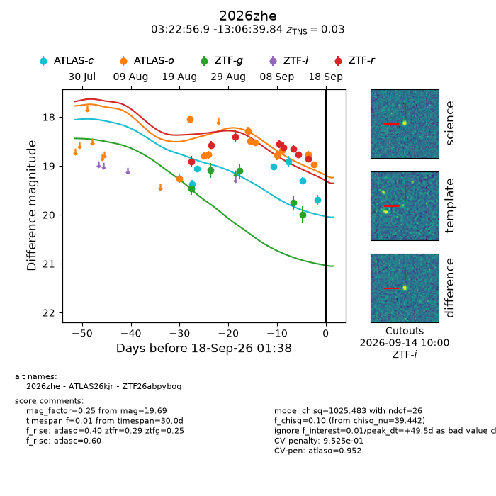
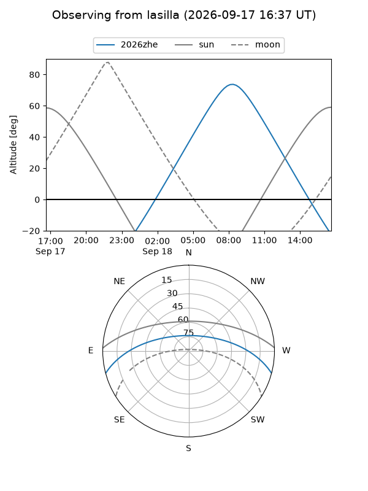
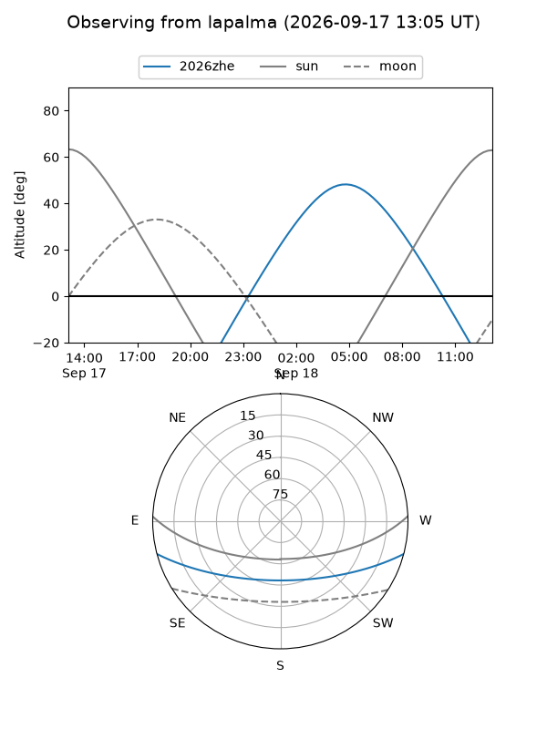
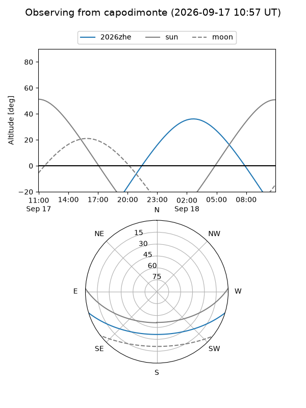
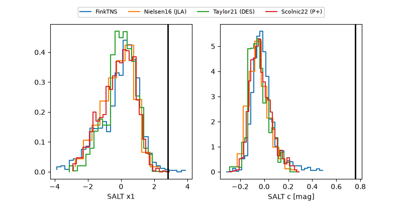

2026zhe
Target 2026zhe at 2026-09-18 01:39
Aliases and brokers:
FINK-ZTF: ztf.fink-portal.org/ZTF26abpyboq
Lasair-ZTF: lasair-ztf.lsst.ac.uk/objects/ZTF26abpyboq
ALeRCE-ZTF: alerce.online/object/ZTF26abpyboq
YSE-PZ: ziggy.ucolick.org/yse/transient_detail/2026zhe
TNS name: wis-tns.org/object/2026zhe
Direct TNS query: direct search
alt names
ZTF26abpyboq (ztf,fink_ztf)
2026zhe (tns,yse)
ATLAS26kjr (atlas)
Coordinates:
equatorial (ra, dec) = 50.7369,-13.11107
equatorial (HMS+DMS) = 03:22:56.86,-13:06:39.84
galactic (l, b) = (198.9714,-51.96302)
Flags:
TNS type: SN II
TNS redshift: 0.0300
peak dt: +49.5
likely cv: !!
Photometry:
last atlasc=19.69, atlaso=18.97, ztfg=19.99, ztfr=18.85
6 atlasc, 11 atlaso, 5 ztfg, 8 ztfr detections
Lightcurve

Visibility



Additional plots
